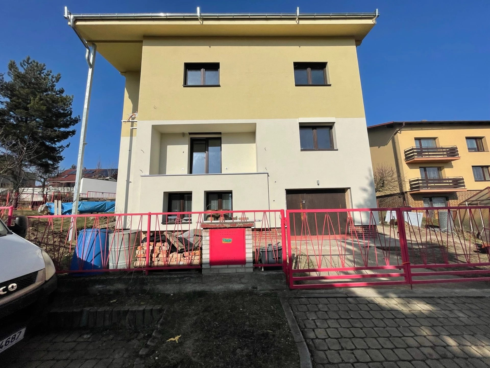
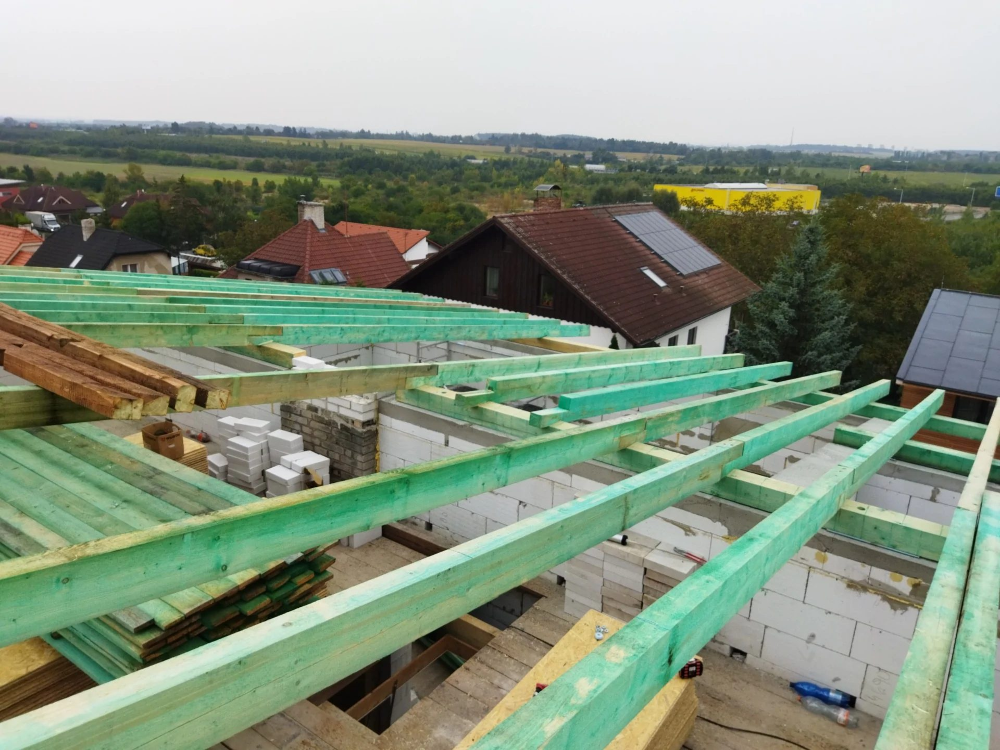
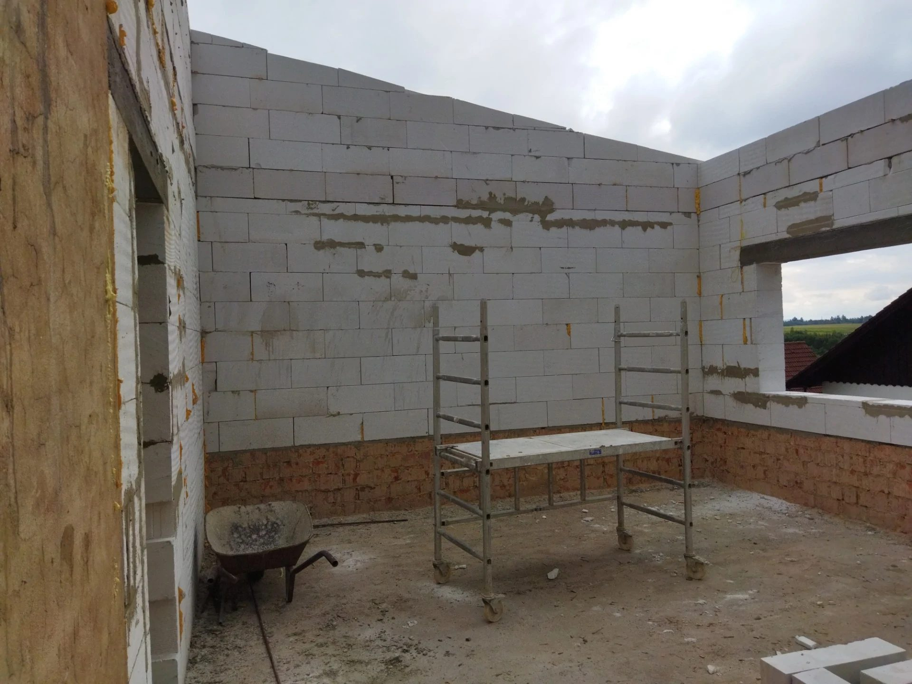
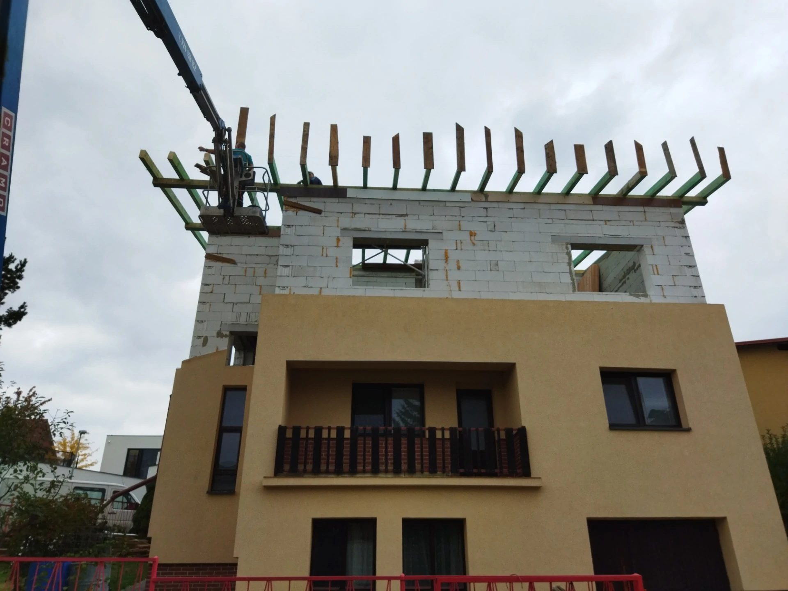
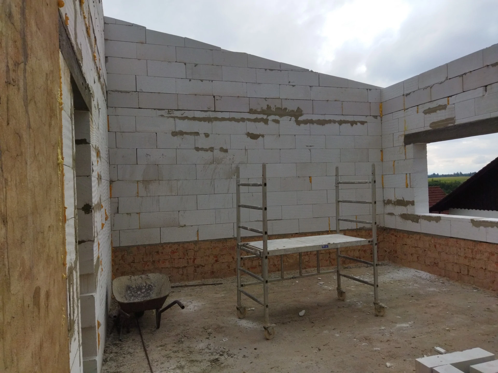

Nástavba
RD
Nástavba rodinného domu v Praze Dolních Počernicích. Rozšíření obytné plochy o nové patro. Projekt zahrnoval výstavbu nového patra na existující konstrukci, včetně zdicích prací, osazení překladů a přípravy pro střešní konstrukci. Práce prováděny s ohledem na zachování provozu v přilehlých prostorách.
Fotogalerie





Podobný projekt?
Vyplňte poptávku a ozveme se vám co nejdříve.